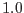

This was the only mode of operation available before version 2.9. It is still the default.
In this mode, the gtialign task takes as input the GTI file to be aligned, and the event list to which the GTIs will eventually be applied. There should be exposure extension(s) in the event list, which will contain the frame readout times for the events in this file. This data will be used to adjust the GTI start and stop times as described above. The different CCDs in the instruments may have different frame integration start and stop times, so that the GTI file will have to be aligned separately for each CCD. Note that the frame integration time for a particular CCD can also vary within a given exposure.
Depending on the convention used (as recorded in the TIMEPIXR keyword of the EVENTS extension), the times associated with individual events can be set to the beginning, end or middle of the frame readout intervals (or, in principle, any value in between). This is also true of the exposure extension, which stores the frame readout times as an absolute time and an interval.
In the case of the event times, this task adjusts the GTIs such that any event in a frame with a good GTI will be accepted, no matter where in the frame readout interval this time is set.
However, for the exposure information, it is necessary to know what convention is being used for storing frame timing information. This will be determined by referring to the OGIP keyword TIMEPIXR in the header of the exposure extension. A value of corresponds to time stamps referring to the beginning of the time interval,  to the end of the time interval, etc. If the keyword is not present, the default value is , i.e. the time stamp refers to the middle of the time interval.
The output of this task will be a FITSfile, with a GTI extension for each CCD in the event list. Each extension will have the name STDGTIn, where n is the CCD number for that extension. Where deemed useful, the extension will also contain CCD specific keywords such as CCDID, CCDNODE, and FRMTIME. The primary header of this file will contain all the standard XMM keywords, as copied from the original GTI file.
All GTI files will be OGIP compliant.